3. Vectors and Matrices#
Computer graphics relies heavily on mathematics of vectors and matrices. In this lab we will be revising these and show how we can perform calculations in C++.
3.1. The glm library#
The glm (OpenGL Mathematics) library is a popular C++ mathematics library designed to provide classes and functions for mathematical operations, specifically tailored for graphics programming using OpenGL. We will be using functions from GLM to perform calculations for us.
Create an empty project in Visual Studio or Xcode and call it lab03_vectors_and_matrices.
Using the command prompt in Windows or the terminal in macOS and navigate to your newly created project folder. Within the project folder clone the GLM repository
git clone https://github.com/g-truc/glm
Add the glm/ folder to your project.
Visual studio:
Right-click on your project in the project viewer and click on ‘Properties’.
Select ‘C/C++’ and then ‘General’.
Click on the down arrow next to ‘Additional Include Directories’ and then select ‘Edit’.
Add your glm/ folder and click OK a couple of times.
Xcode:
Click on the project name on the left side of the window and then on ‘Build Phases’.
In the search bar do a search for ‘Search’ which should show section titled ‘Search Paths’.
Edit the ‘Header Search Paths’ and ‘Library Search Paths’ to include the folder glm/.
3.2. Vectors#
A vector in three-dimensional space is an object with magnitude (length) and direction. A vector is denoted by a boldface lower case letter, e.g., \(\mathbf{a}\), or an underlined lower case letter, e.g., \(\underline{a}\), when handwritten and represented mathematically by the 3-tuple
where \(a_x\), \(a_y\) and \(a_z\) are the displacement of the vector in the \(x\), \(y\) and \(z\) directions.

3.2.1. Vector magnitude#
The magnitude of a vector \(\mathbf{a} = (a_x, a_y, a_z)\) is denoted by \(|\mathbf{a}|\) is the length from the tail of the vector to the head and calculated using

For example, the magnitude of the vector \(\mathbf{u} = (2, 2, 1)\) is
We will now define this vector in C++ and use the glm library to calculate its magnitude.
#include <iostream>
#define GLM_ENABLE_EXPERIMENTAL // needed for the to_string function
#include <glm/glm.hpp>
#include <glm/ext.hpp>
#include <glm/gtc/matrix_transform.hpp>
int main() {
// Vector magnitude (length)
glm::vec3 u = glm::vec3(2.0f, 2.0f, 1.0f);
float lenu = glm::length(u);
std::cout << "Vector magnitude\n----------------" << std::endl;
std::cout << "u = " << glm::to_string(u) << std::endl;
std::cout << "|u| = " << lenu << std::endl;
return 0;
}
The glm::vec u(2.0f, 2.0f, 1.0f) command defines a 3-element vector u and the magnitude is calculated using glm::length(u). The output of the program is shown below.
Vector magnitude
----------------
u = vec3(2.000000, 2.000000, 1.000000)
|u| = 3
3.2.2. Vector multiplication by a scalar#
The multiplication of a vector \(\mathbf{a} = (a_x, a_y, a_z)\) by a scalar (a number) \(k\) is calculated using
Multiplying a vector by a positive scalar has the effect of scaling the length of the vector. Multiplying by a negative scalar reverses the direction of the vector.

For example, multiplying the vector \(\mathbf{u} = (2, 2, 1)\) by the scalar 2 gives
which has the magnitude
To multiply a glm vector by a scalar we simply using the standard * operator. Add the following to your code to check it returns the correct vector.
Add the following code to your program.
// Multiplication by a scalar
glm::vec3 _2u = 2.0f * u;
float len_2u = glm::length(_2u);
std::cout << "\nMultiplication by a scalar\n--------------------------" << std::endl;
std::cout << "2u = " << glm::to_string(_2u) << std::endl;
std::cout << "|2u| = " << len_2u << std::endl;
Output
Multiplication by a scalar
--------------------------
2u = vec3(4.000000, 4.000000, 2.000000)
|2u| = 6
3.2.3. Unit vectors#
A unit vector is a vector that has a magnitude of 1. We can find a unit vector that points in the same direction as a non-zero vector \(\mathbf{a}\), which is denoted by \(\hat{\mathbf{a}}\) (pronounced “a-hat”), by dividing by its magnitude, i.e.,
For example, to determine a unit vector pointing in the same direction as \(\mathbf{u} = (2, 2, 1)\)
Checking that \(\hat{\mathbf{u}}\) has a magnitude of 1
Add the following to your program
// Unit vectors
glm::vec3 uHat = u / lenu;
float lenuHat = glm::length(uHat);
std::cout << "\nUnit vectors\n------------" << std::endl;
std::cout << "uhat = " << glm::to_string(uHat) << std::endl;
std::cout << "|uhat| = " << lenuHat << std::endl;
Output
Unit vectors
------------
uhat = vec3(0.666667, 0.666667, 0.333333)
|uhat| = 1
3.2.4. Vector addition and subtraction#
The addition and subtraction of two vectors \(\mathbf{a} = (a_x, a_y, a_z)\) and \(\mathbf{b} = (b_x, b_y, b_z)\) is defined by
For example, given the vectors \(\mathbf{u} = (2,2,1)\) and \(\mathbf{v} = (3, 4, 5)\)
The standard + and - operators are used to add and subtract glm vectors. Add the following code to your program.
// Vector addition and subtraction
glm::vec3 v(3.0f, 4.0f, 5.0f);
glm::vec3 uPlusv = u + v;
glm::vec3 uMinusv = u - v;
std::cout << "\nVector addition and subtraction\n-------------------------------" << std::endl;
std::cout << "v = " << glm::to_string(v) << std::endl;
std::cout << "u + v = " << glm::to_string(uPlusv) << std::endl;
std::cout << "u - v = " << glm::to_string(uMinusv) << std::endl;
Output
Vector addition and subtraction
-------------------------------
v = vec3(3.000000, 4.000000, 5.000000)
u + v = vec3(5.000000, 6.000000, 6.000000)
u - v = vec3(-1.000000, -2.000000, -4.000000)
Its important to understand what is happening in a geometrical sense when we add and subtract vectors. Take a look at Fig. 3.1, here the vector \(\mathbf{b}\) has been added to the vector \(\mathbf{a}\) where the tail of \(\mathbf{b}\) is places at the head of \(\mathbf{a}\). The resulting vector \(\mathbf{a} + \mathbf{b}\) points from the tail of \(\mathbf{a}\) to the head of \(\mathbf{b}\).
With the subtraction of the vector \(\mathbf{b}\) we do similar but instead multiply \(\mathbf{b}\) by -1 thereby reversing its direction.
{kind=link}
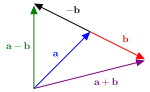
Fig. 3.1 Vector addition and subtraction.#
3.2.5. Dot product#
The dot product between two vectors \(\mathbf{a} = (a_x, a_y, a_z)\) and \(\mathbf{b} = (b_x, b_y, b_z)\) is denoted by \(\mathbf{a} \cdot \mathbf{b}\) and returns a scalar quantity (a number). The dot product is calculated using
The dot product is related to the angle between the two vectors by the relationship
where \(\theta\) is the angle between the vectors \(\mathbf{a}\) and \(\mathbf{b}\).

A useful result for computer graphics is that if \(\theta=0\) then \(\cos(90^\circ)= 0\) and equation (3.6) becomes
In order words, if the dot product of two vectors is zero then the two vectors are perpendicular.
For example, given the vectors \(\mathbf{u} = (2,2,1)\) and \(\mathbf{v} = (3, 4, 5)\) the dot product \(\mathbf{u} \cdot \mathbf{v}\) is
The glm function for calculating the dot product is glm::dot(a,b). Add the following to your program.
// The dot product
float uDotv = glm::dot(u, v);
std::cout << "\nThe dot product\n--------------- " << std::endl;
std::cout << "u . v = " << uDotv << std::endl;
Output
The dot product
---------------
u . v = 19
3.2.6. Cross product#
The cross product between two vectors \(\mathbf{a} = (a_x, a_y, a_z)\) and \(\mathbf{b} = (b_x, b_y, b_z)\) is denoted by \(\mathbf{a} \times \mathbf{b}\) and returns a vector. The cross product is calculated using
The cross product between two vectors produces another vector that is perpendicular to both vectors. This is another incredibly useful result as it allows use to calculate normal vectors for polygons which are used in calculating how light is reflected off surfaces.

For example, given the vectors \(\mathbf{u} = (2,2,1)\) and \(\mathbf{v} = (3, 4, 5)\) the cross product \(\mathbf{u} \times \mathbf{v}\) is
Show that \(\mathbf{u} \times \mathbf{v}\) is perpendicular to both \(\mathbf{u}\) and \(\mathbf{v}\)
The glm function for calculating the cross product between two vectors is glm::cross(a,b). Add the following code to your program.
// The cross product
glm::vec3 uCrossv = glm::cross(u, v);
float uDotuCrossv = glm::dot(u, uCrossv);
std::cout << "\nThe cross product\n----------------- " << std::endl;
std::cout << "u x v = " << glm::to_string(uCrossv) << std::endl;
std::cout << "u . (u x v) = " << uDotuCrossv << std::endl;
Output
The cross product
-----------------
u x v = vec3(-1.000000, -2.000000, -4.000000)
u . (u x v) = 0
3.3. Matrices#
A matrix is a rectangular array of numbers
We refer to the size of a matrix by the number of horizontal rows \(\times\) the number of vertical columns. Here the matrix \(A\) has 2 rows and 2 columns so we call this matrix a \(2 \times 2\) matrix. The individual elements of a matrix are referenced by an index which is a pair of numbers, the first of which is the row number and the second is the column number, so \(a_{ij}\) is the element in row \(i\) and column \(j\) of the matrix \(A\).
For example for the matrix \(A\) defined above \(a_{11} = 1\), \(a_{12} = 2\), \(a_{21} = 3\) and \(a_{22} = 4\).
The glm command for defining a matrix is glm::matn where n is the number of rows and columns of the matrix (e.g., glm::mat2 will define a \(2\times 2\) matrix). Lets define the \(2 \times 2\) matrix \(A\) in our program and print it. Add the following to your program.
// Defining a matrix
glm::mat2 A = glm::mat2(glm::vec2(1.0f, 2.0f), glm::vec2(3.0f, 4.0f));
std::cout << "\nDefining a matrix\n-----------------" << std::endl;
std::cout << "A = " << std::endl;
std::cout << "[ " << A[0][0] << " " << A[0][1] << " ]" << std::endl;
std::cout << "[ " << A[1][0] << " " << A[1][1] << " ]" << std::endl;
Note that we have defined each row of the matrix A using 2-element vectors and that the indexing starts at 0, e.g., element \(a_{11}\) is indexed using A[0][0] (the same applies to vectors).
Output
Defining a matrix
-----------------
A =
[ 1 2 ]
[ 3 4 ]
We will be print a number of matrices so it would make sense to define a function to do this. Outside of your main function add the following code.
void print_matrix(glm::mat4 mat, int rows, int cols) {
for (int i = 0; i < rows; i++) {
std::cout << "[ ";
for (int j = 0; j < cols; j++) {
std::cout << mat[i][j] << " ";
}
std::cout << "]" << std::endl;
}
std::cout << std::endl;
}
You can now replace the lines that print the matrix with print_matrix(A, 2, 2) which achieves the same result.
3.3.1. Matrix transpose#
The transpose of a matrix \(A\) is denoted by \(A^\mathsf{T}\) and is defined by swapping the rows and columns of \(A\).
For example, given the matrix \(A\) defined earlier
The glm function to calculate the transpose of a matrix is glm::transpose(A). Add the following code to your program.
// Matrix transpose
glm::mat2 ATranspose = glm::transpose(A);
std::cout << "\nMatrix transpose\n-----------------" << std::endl;
std::cout << "A^T = " << std::endl;
print_matrix(ATranspose, 2, 2);
Output
Matrix transpose
-----------------
A^T =
[ 1 3 ]
[ 2 4 ]
3.3.2. Matrix multiplication#
The addition, subtraction and multiplication by a scalar for matrices is the same as it is for vectors so I’m not going to repeat it here. However, the multiplication of two matrices \(A\) and \(B\) is defined in a very specific way
where \(\mathbf{a}_i\) is the vector formed from row \(i\) of \(A\) and \(\mathbf{b}_j\) is the vector formed from column \(j\) of \(B\).
For example, given the matrices \(A\) and \(B\)
then the multiplication \(AB\) is
If we were to transpose both \(A\) and \(B\) then we would see that \(AB = B^\mathsf{T}A^\mathsf{T}\), for example, using the matrices defined above
Note
Memory in a computer can be considered as being one long 1D array, so when a matrix is stored in the memory we have a choice whether to use row-major order where we store the rows of the matrix one after the other or column-major order where we store the columns of the matrix on after the other. For example, given the matrix
then in row-major order the matrix would be stored as
a b c d e f g h i
and in column-major order we have
a d g b e h c f i
Note that the transpose of \(A\) is
and the row-major/column major order are swapped. Mathematically it doesn’t matter whether we use row or column-major as long as we multiply in the correct order. OpenGL uses column-major order so the glm operator for matrix multiplication is reversed, e.g., \(AB\) is calculated using B * A.
The * operator is used to multiply two or more glm matrices together but the order is reversed to how it is written (see above). Add the following code to your program.
// Matrix multiplication
glm::mat2 B = glm::mat2(glm::vec2(5,6), glm::vec2(7,8));
glm::mat2 AB = B * A; // note the ordering!
std::cout << "\nMatrix multiplication\n---------------------" << std::endl;
std::cout << "B = " << std::endl;
print_matrix(B, 2, 2);
std::cout << "AB = " << std::endl;
print_matrix(AB, 2, 2);
Output
Matrix multiplication
---------------------
B =
[ 5 6 ]
[ 7 8 ]
AB =
[ 19 22 ]
[ 43 50 ]
3.3.3. The identity matrix#
The identity matrix is a special square matrix (same number of rows and columns) where all the elements are zero apart from the elements on the diagonal line from the top-left element down to the bottom-right element (known as the main diagonal). For example the \(4\times 4\) identity matrix is
The identity element is similar to the number 1 in that if we multiply any matrix by an identity matrix the result is unchanged. For example
We can generate an n\(\times\)n identity matrix by using the glm command glm::matn(1.0f). Add the following code to your program
// Identity matrix
glm::mat2 I = glm::mat2(1.0f);
glm::mat2 IA = A * I;
std::cout << "\nIdentity matrix\n-----------" << std::endl;
std::cout << "I = " << std::endl;
print_matrix(I, 2, 2);
std::cout << "IA = " << std::endl;
print_matrix(IA, 2, 2);
Output
Identity matrix
-----------
I =
[ 1 0 ]
[ 0 1 ]
IA =
[ 1 2 ]
[ 3 4 ]
3.4. Transformations#
Note
The co-ordinate system used by OpenGL is a right-hand 3D co-ordinate system (on your right hand the thumb represents the \(x\)-axis, the index finger the \(y\)-axis and the middle finger the \(z\)-axis) with the \(x\)-axis pointing to the right, the \(y\)-axis point upwards and the \(z\)-axis pointing out of the screen towards the viewer.
{kind=link}
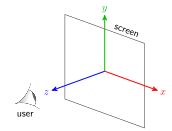
Fig. 3.2 The OpenGL co-ordinate system.#
Computer graphics requires that shapes are manipulated in space by moving the shapes, shrinking or stretching, rotating and reflection to name a few. We call these manipulations transformations. We need a convenient way of telling the computer how to apply our transformations and for this we make use of matrices (hence why we needed to revise them here).
Each transformation has an associated transformation matrix which we used to multiply the co-ordinates of our shapes to calculate the co-ordinates of the transformed shape. For example if \(A\) is a transformation matrix for a particular transformation and \((x,y,z)\) are the co-ordinates of a point then we apply the transformation using
where \((x',y',z')\) are the co-ordinates of the transformed point.
3.4.1. Translation#
The translation transformation when applied to a set of points moves each point by the same amount. For example, consider the triangle in Fig. 3.3, each of the vertices has been translated by the same translation vector \(\mathbf{t}\) which has that effect of moving the triangle.
{kind=link}
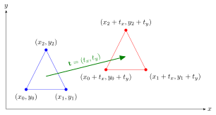
Fig. 3.3 Translation of a triangle by the translation vector \(\mathbf{t}= (t_x, t_y)\).#
A problem we have is that no transformation matrix exist for applying translation to the co-ordinates \((x, y, z)\), e.g., we can’t find a matrix \(T\) such that
Don’t worry, all is not lost. We can use a trick where we use homogeneous co-ordinates instead. Homogeneous co-ordinates add another value, \(w\) say, to the co-ordinates (known as Cartesian co-ordinates) such that when the \(x\), \(y\) and \(z\) values are divided by \(w\) we get the Cartesian co-ordinates.
So if we choose \(w=1\) then we can write the Cartesian co-ordinates \((x,y,z)\) as the homogeneous co-ordinates \((x,y,z,1)\) (remember that 4-element vector with the additional 1 in our vertex shader?). So how does that help us with our elusive translation matrix? Well we can now represent translation as a \(4\times 4\) matrix
which is our desired translation. So the translation matrix for translating a set of points by the vector \(\mathbf{t} = (t_x, t_y, t_z)\) is
The beauty of using matrices is that we can apply the same transformation to multiple points with a single matrix multiplication. Lets say we have points with co-ordinates \((x_0, y_0, z_0)\), \((x_1, y_1, z_1)\), etc. then we can form a single matrix where our co-ordinates form the rows and then multiply this by the translation matrix
For example, translate the triangle with vertices at (1,1,0), (3,1,0) and (2,3,0) by the translation vector (4,1,0).
so the translated triangle has vertices at (5, 2, 0), (7, 2, 0) and (6, 4, 0) (this is the translation shown in Fig. 3.3).
Lets write some code to apply this translation. Add the following to your program.
// Translation
// Define vertex co-ordinates (using homogenous co-ordinates)
glm::mat3x4 vertices = glm::mat3x4(glm::vec4(1.0f, 1.0f, 0.0f, 1.0f),
glm::vec4(3.0f, 1.0f, 0.0f, 1.0f),
glm::vec4(2.0f, 3.0f, 0.0f, 1.0f));
// Define translation matrix
glm::mat4 translationMatrix = glm::mat4(1.0f);
translationMatrix[3][0] = 4.0f;
translationMatrix[3][1] = 1.0f;
translationMatrix[3][2] = 0.0f;
// Apply translation
glm::mat3x4 translatedVertices = translationMatrix * vertices; // apply translation
std::cout << "\nTranslation\n---------------" << std::endl;
std::cout << "vertices = " << std::endl;
print_matrix(vertices, 3, 4);
std::cout << "translationMatrix = " << std::endl;
print_matrix(translationMatrix, 4, 4);
std::cout << "translatedVertices = " << std::endl;
print_matrix(translatedVertices, 3, 4);
Output
Translation
---------------
vertices =
[ 1 1 0 1 ]
[ 3 1 0 1 ]
[ 2 3 0 1 ]
translationMatrix =
[ 1 0 0 0 ]
[ 0 1 0 0 ]
[ 0 0 1 0 ]
[ 4 1 0 1 ]
translatedVertices =
[ 5 2 0 1 ]
[ 7 2 0 1 ]
[ 6 4 0 1 ]
Whilst it wasn’t particularly difficult to define the translationMatrix we will be using it often so it make sense that we should use a function to do this. Fortunately there is one already in glm which we can used, glm::translate(matrix, vector) outputs the translation matrix for the translation by vector applied to matrix. So we could replace the two lines of code where we calculate translationMatrix with the following
glm::mat4 translationMatrix = glm::translate(glm::mat4(1.0f), glm::vec3(4, 1, 0));
Note that here we applied the translation to the identity matrix.
3.4.2. Scaling#
Scaling is the simplest transformation we can apply. Multiplying the \(x\), \(y\) and \(z\) co-ordinates of a point by a scalar quantity (a number) has the effect of moving the point closer or further away from the origin (0,0). For example, consider the triangle in Fig. 3.4. The \(x\) co-ordinate of each vertex has been multiplied by \(s_x\) and the \(y\) co-ordinates have been multiplied by \(s_y\) which has the effect of scaling the triangle and moving it further away from the origin (in this case \(s_x\) and \(s_y\) are both greater than 1).
{kind=link}
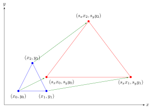
Fig. 3.4 Scaling of a triangle by the scaling vector \(\mathbf{s}=(s_x,s_y)\).#
The scaling matrix for applying the scaling transformation is
For example, lets scale the same triangle as we used for demonstrating transformation by the scaling vector (3, 2, 1).
so the scaled triangle now has vertices at (3,2,0), (6,2,0) and (4,6,0) (this is the scaling shown in Fig. 3.4).
Lets do this in our program.
// Scaling
// Define the scaling matrix
glm::mat4 scalingMatrix = glm::mat4(1.0f);
scalingMatrix[0][0] = 3.0f;
scalingMatrix[1][1] = 2.0f;
//Apply scaling
glm::mat3x4 scaledVertices = scalingMatrix * vertices;
std::cout << "\nScaling\n-------" << std::endl;
std::cout << "scalingMatrix = " << std::endl;
print_matrix(scalingMatrix, 4, 4);
std::cout << "scaledVertices = " << std::endl;
print_matrix(scaledVertices, 3, 4);
Output
Scaling
-------
scalingMatrix =
[ 3 0 0 0 ]
[ 0 2 0 0 ]
[ 0 0 1 0 ]
[ 0 0 0 1 ]
scaledVertices =
[ 3 2 0 1 ]
[ 9 2 0 1 ]
[ 6 6 0 1 ]
Like with the translation matrix, we can use the glm command glm::scale(matrix, vector) to generate scalingMatrix
glm::mat4 scalingMatrix = glm::scale(glm::mat4(1.0f), glm::vec3(3, 2, 1));
The center of the original triangle was at (2, 1.67, 0) (the sum of the vertices divided by 3) and the center of the scaled triangle is at (6, 3.33, 0). A more useful transformation is to scale shapes so that the position of the center of the shape doesn’t move (think of an object in a computer game growing and shrinking).
If we have an object which has a centre at the origin then the effect of scaling the vertex co-ordinates means that the centre remains at the origin as shown in Fig. 3.5.
{kind=link}
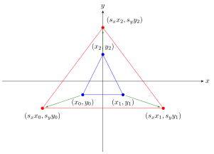
Fig. 3.5 Scaling a triangle centred at the origin.#
So to scale the example triangle so that its centre remains unchanged we first need to translate it to the origin by the translation vector (-2,-1.67,0) (the center co-ordinates with the signs changed), perform the scaling, and then translate it back to the its original position by the translation vector (2, 1.67, 0).
Translate to the origin:
Scale:
Translate back to the original position:
So the scaled triangle has vertices at (-1,0.33,0), (5,0.33,0) and (2,4.33,0) and the centre of the scaled triangle is at (2, 1.67, 0) as before.
{kind=link}
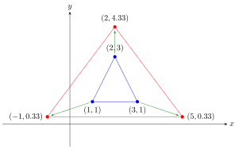
Fig. 3.6 Scaling a triangle about its centre.#
Lets do this in our program.
// Scale a triangle about its centre
// Calculate centre co-ordinates
glm::vec3 centre = glm::vec3(0, 0, 0);
for (int j = 0; j < 3; j++) {
for (int i = 0; i < 3; i++) {
centre[j] += vertices[i][j];
}
}
centre /= 3;
// 1. Translate triangle centre to origin
glm::mat4 translationMatrix1 = glm::translate(glm::mat4(1.0f), -centre);
glm::mat4 transformedVertices = translationMatrix1 * vertices;
std::cout << "\nScaling a triangle about its centre\n----------------------" << std::endl;
std::cout << "Translate centre to origin:\n\ntransformedVertices = " << std::endl;
print_matrix(transformedVertices, 3, 4);
// 2. Scale triangle
transformedVertices = scalingMatrix * transformedVertices;
std::cout << "Scale triangle:\n\ntransformedVertices = " << std::endl;
print_matrix(transformedVertices, 3, 4);
// 3. Translate triangle centre back to original position
glm::mat4 translationMatrix2 = glm::translate(glm::mat4(1.0f), centre);
transformedVertices = translationMatrix2 * vertices;
std::cout << "Translate centre back to original position:\n\ntransformedVertices = " << std::endl;
print_matrix(transformedVertices, 3, 4);
Output
Scaling a triangle about its centre
----------------------
Translate centre to origin:
transformedVertices =
[ -1 -0.666667 0 1 ]
[ 1 -0.666667 0 1 ]
[ 0 1.33333 0 1 ]
Scale triangle:
transformedVertices =
[ -3 -1.33333 0 1 ]
[ 3 -1.33333 0 1 ]
[ 0 2.66667 0 1 ]
Translate centre back to original position:
transformedVertices =
[ -1 0.333333 0 1 ]
[ 5 0.333333 0 1 ]
[ 2 4.33333 0 1 ]
3.4.3. Composite transformations#
We have seen that to scale an object about its centre we needed to use three transformations which means three separate matrix multiplications. Instead of performing the three transformations separately we can calculate a single transformation matrix which combines these transformations. If we say that \(T_1\), \(S\) and \(T_2\) are the transformation matrices for the translation of the centre to the origin, scaling and translation of the centre back to the original position then the composite of our three transformations is
If we say that \(A = T_1 \cdot S \cdot T_2\) then \(A\) is a composite transformation matrix that combines our three transformations (fun fact - this is why matrix multiplication is defined the way it is in equation (3.8)). So for our example
Applying our composite transformation matrix to the triangle vertices
which are the same as when we did the three transformations separately. Lets do this with code. Add the following to your program.
// Composite transformations
glm::mat4 transformationMatrix = translationMatrix2 * scalingMatrix * translationMatrix1;
transformedVertices = transformationMatrix * vertices;
std::cout << "transformationMatrix = " << std::endl;
print_matrix(transformationMatrix, 4, 4);
std::cout << "transformedVertices = " << std::endl;
print_matrix(transformedVertices, 3, 4);
Important
Remember the OpenGL and glm use column-major ordering so we reverse the order of our matrices when multiplying. So \(T_1 \cdot S \cdot T_2\) would be coded as
T2 * S * T1
i.e., the transformations are applied from right to left.
Output
transformationMatrix =
[ 3 0 0 0 ]
[ 0 2 0 0 ]
[ 0 0 1 0 ]
[ -4 -1.66667 0 1 ]
transformedVertices =
[ -3 -1.33333 0 1 ]
[ 3 -1.33333 0 1 ]
[ 0 2.66667 0 1 ]
3.4.4. Rotation#
As well as moving objects and scaling them, the next most common transformation is the rotation of objects around the three co-ordinate axes \(x\), \(y\) and \(z\). We define the rotation anticlockwise around each of the co-ordinate axes by an angle \(\theta\) when looking down the axes (Fig. 3.7).
{kind=link}
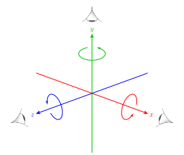
Fig. 3.7 Rotation is assumed to be in the anti-clockwise direction when looking down the axis.#
The rotation matrices for achieving these rotations are
Axis |
Rotation matrix |
|---|---|
\(x\) |
\(\begin{pmatrix} 1 & 0 & 0 & 0 \\ 0 & \cos(\theta) & \sin(\theta) & 0 \\ 0 & -\sin(\theta) & \cos(\theta) & 0 \\ 0 & 0 & 0 & 1 \end{pmatrix}\) |
\(y\) |
\(\begin{pmatrix} \cos(\theta) & 0 & -\sin(\theta) & 0\\ 0 & 1 & 0 & 0 \\ \sin(\theta) & 0 & \cos(\theta) & 0 \\ 0 & 0 & 0 & 1 \end{pmatrix}\) |
\(z\) |
\(\begin{pmatrix} \cos(\theta) & \sin(\theta) & 0 & 0 \\ -\sin(\theta) & \cos(\theta) & 0 & 0 \\ 0 & 0 & 1 & 0 \\ 0 & 0 & 0 & 1 \end{pmatrix}\) |
Derivation of the rotation matrices (click to show)
We will consider rotation about the \(z\)-axis and will restrict our co-ordinates to 2D.
{kind=link}
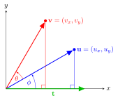
Fig. 3.8 Rotating the vector \(\mathbf{u}\) anti-clockwise by angle \(\theta\) to the vector \(\mathbf{v}\).#
Consider Fig. 3.8 where the vector \(\mathbf{u}\) is rotated by angle \(\theta\) to the vector \(\mathbf{v}\). To get this rotation we first consider the rotation of a vector with the same length as \(\mathbf{u}\) but points along the \(x\)-axis by angle \(\phi\) to get to \(\mathbf{u}\). If we form a right-angled triangle (the blue one) then we know the length of the hypotenuse, \(|\mathbf{u}|\), and the angle so we can calculate the lengths of the adjacent and opposite sides using trigonometry. Remember our trig ratios (SOC-CAH-TOA)
so the length of the adjacent and opposite sides of the blue triangle is
Now \(u_x\) and \(u_y\) are the lengths of the adjacent and opposite sides respectively and \(|\mathbf{u}|\) is the length of the hypotenuse then we have
Now consider the rotation from \(\mathbf{t}\) by the angle \(\phi + \theta\) to get to \(\mathbf{v}\). Using the same method as before we have
We can rewrite \(\cos(\phi+\theta)\) and \(\sin(\phi+\theta)\) using trigonometric identities
so
Since \( u_x = |\mathbf{u}| \cos(\phi)\) and \(u_y = |\mathbf{u}| \sin(\phi)\) then
which can be written using matrices as
so the transformation matrix for rotating around the \(z\)-axis in 2D is
We need a \(4\times 4\) matrix to represent 3D rotation around the \(z\)-axis so we replace the 3rd and 4th row and columns with the 3rd and 4th row and column from the \(4\times 4\) identity matrix giving
The rotation matrices for the rotation around the \(x\) and \(y\) axes are derived using a similar process.
Note
You may find some sources present the rotation matrices in a slightly different way where the negative sign for the \(\sin(\theta)\) is swapped (see Wikipedia for an example). This is because these assume that the vertices are multiplied by the transformation matrix on the left, e.g., \((x', y', z', 1)^\mathsf{T} = T\cdot (x, y, z, 1)^\mathsf{T}\). With OpenGL we multiply by the transformation matrix on the right, e.g., \((x', y', y', 1) = (x, y, z, 1) \cdot T\) (although of course in our code this would be T * [x, y, z, 1] - this can get quite confusing!).
For example, let’s rotate our triangle anti-clockwise about the \(z\)-axis by \(\theta = 45^\circ\). The rotation matrix is
Applying the transformation
Add the following to your program (the function glm::radians(angle) converts from degrees to radians).
// Rotation
glm::mat4 rotationMatrix = glm::mat4(1.0f);
float theta = glm::radians(45.0f);
rotationMatrix[0][0] = glm::cos(theta);
rotationMatrix[0][1] = glm::sin(theta);
rotationMatrix[1][0] = - glm::sin(theta);
rotationMatrix[1][1] = glm::cos(theta);
glm::mat4 rotatedVertices = rotationMatrix * vertices;
std::cout << "\nRotating a triangle about the origin\n------------------------------------" << std::endl;
std::cout << "rotationMatrix = " << std::endl;
print_matrix(rotationMatrix, 4, 4);
std::cout << "rotatedVertices = " << std::endl;
print_matrix(rotatedVertices, 3, 4);
Output
Rotation
--------
zRotationMatrix =
[ 0.707107 0.707107 0 0 ]
[ -0.707107 0.707107 0 0 ]
[ 0 0 1 0 ]
[ 0 0 0 1 ]
rotatedVertices =
[ 0 1.41421 0 1 ]
[ 1.41421 2.82843 0 1 ]
[ -0.707107 3.53553 0 1 ]
{kind=link}
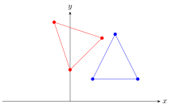
Fig. 3.9 A triangle rotated anti-clockwise by \(45^\circ\).#
3.4.5. Axis-angle rotation#
The three rotation transformations are only useful if we want to only rotate around one of the three co-ordinate axes. A more useful transformation is the rotation around the axis that points in the direction of a vector (Fig. 3.10).
{kind=link}
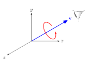
Fig. 3.10 Axis-angle rotation.#
The transformation matrix for rotation around a unit vector \(\mathbf{v} = (v_x, v_y, v_z)\) anti-clockwise by angle \(\theta\) when looking down the vector is.
Derivation of the axis-angle rotation matrix (click to show)
The rotation about the vector \(\mathbf{v} = (v_x, v_y, v_z)\) by angle \(\theta\) is the composition of 5 separate rotations:
Rotate \(\mathbf{v}\) around the \(x\)-axis so that it is in the \(xz\)-plane (the \(y\) component of the vector is 0);
Rotate the vector around the \(y\)-axis so that it points along the \(z\)-axis (the \(x\) and \(y\) components are 0 and the \(z\) component is a positive number);
Perform the rotation around the \(z\)-axis;
Reverse the rotation around the \(y\)-axis;
Reverse the rotation around the \(x\)-axis.
The rotation around the \(x\)-axis is achieved by forming a right-angled triangle in the \(yz\)-plane where the the angle of rotation \(\theta\) has an adjacent side of length \(v_z\), an opposite side of length \(v_y\) and a hypotenuse of length \(\sqrt{v_y^2 + v_z^2}\) (Fig. 3.11).
{kind=link}
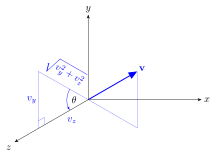
Fig. 3.11 Rotate \(\mathbf{v}\) around the \(x\)-axis#
Therefore \(\cos(\theta) = \dfrac{v_z}{\sqrt{v_y^2 + v_z^2}}\) and \(\sin(\theta) = \dfrac{v_y}{\sqrt{v_y^2 + v_z^2}}\) so the rotation matrix is
The rotation around the \(y\)-axis is achieved by forming another right-angled triangle in the \(xz\)_plane where \(\theta\) has an adjacent side of length \(\sqrt{v_y^2 + v_z^2}\), an opposite side of length \(v_x\) and a hypotenuse of length \(|\mathbf{v}|\) (Fig. 3.12).
{kind=link}
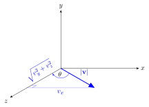
Fig. 3.12 Rotate around the \(y\)-axis#
Therefore \(\cos(\theta) = \dfrac{\sqrt{v_y^2 + v_z^2}}{|\mathbf{v}|}\) and \(\sin(\theta) = \dfrac{v_x}{|\mathbf{v}|}\). Note that here we are rotating in the clockwise direction so the rotation matrix is
Now that the vector points along the \(z\)-axis we perform the rotation so the rotation matrix is
The reverse rotation around the \(y\) and \(x\) axes is simply the rotation matrices \(R_2\) and \(R_1\) with the negative sign for the \(\sin(\theta)\) swapped
Multiplying all of the separate matrices together gives
If we make \(\mathbf{v}\) a unit vector so that \(|\mathbf{v}| = 1\) and \(v_y^2 + v_z^2 = 1 - v_x^2\) then this simplifies to
Fortunately we do not need to code this matrix into C++ as glm has a function to calculate the axis-angle rotation. The function is glm::rotate(matrix, angle, vector) where angle is in radians and the vector is the direction which were are rotating around. Replace the commands for defining rotationMatrix in your program with the following
glm::mat4 rotationMatrix = glm::rotate(glm::mat4(1.0f), glm::radians(45.0f), glm::vec3(0.0f, 0.0f, 1.0f));
Here we have used the vector (0, 0, 1) as we wanted to rotate around the \(z\)-axis.
A plot of the original triangle and a rotated triangle is shown in Fig. 3.9. Note how the position of the centre of the triangle has changed. As with the scaling of the triangle about its centre, we need to form a composite transformation with translating to and from the origin.
Applying the transformation
// Rotate a triangle about its centre
transformationMatrix = translationMatrix2 * zRotationMatrix * translationMatrix1;
std::cout << "transformationMatrix = " << std::endl;
print_matrix(transformationMatrix, 4, 4);
std::cout << "transformedVertices = " << std::endl;
print_matrix(transformedVertices, 3, 4);
Output
transformationMatrix =
[ 0.707107 0.707107 0 0 ]
[ -0.707107 0.707107 0 0 ]
[ 0 0 1 0 ]
[ 1.7643 -0.926058 0 1 ]
transformedVertices =
[ 1.7643 0.488155 0 1 ]
[ 3.17851 1.90237 0 1 ]
[ 1.05719 2.60948 0 1 ]
{kind=link}
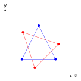
Fig. 3.13 A triangle rotated anti-clockwise by 45\(^\circ\) about its centre.#
3.5. Exercises#
Use C++ to answer the following questions.
A triangle has vertices at (1, 1, 2), (2, 0, 1) and (3, 1, 2). Calculate a unit normal vector to this triangle (a unit normal vector is perpendicular to a polygon and is scaled so it has a length of 1). To ensure our unit vector is pointing in the correct direction, if \(\mathbf{v}_1\), \(\mathbf{v}_2\) and \(\mathbf{v}_3\) are the vertices of the triangle listed in an anti-clockwise direction then the normal vector is calculated using
A square with side lengths of 2 parallel to the \(x\) and \(y\) axes is centred at (4, 3, 0). It is to be scaled so that it is double its original height and half its original width, and rotated anti-clockwise about its centre. Calculate the single transformation matrix to achieve this and calculate the vertices of the transformed square.
Write your own C++ class called
mylibwith methods for calculating the following:
Use your class to answer questions 1 and 2.